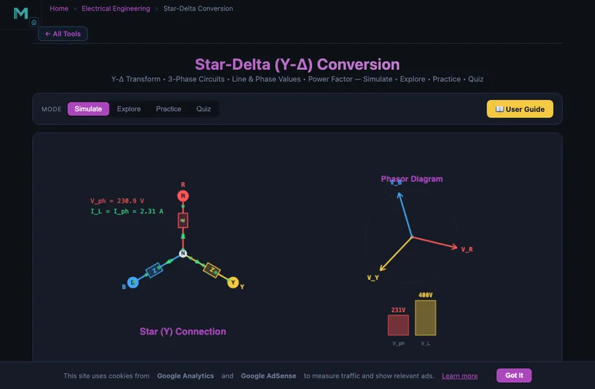
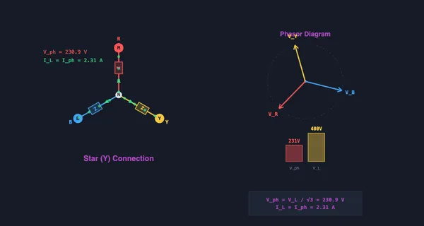

Star-Delta (Y-Δ) Conversion
Y-Δ Transform • 3-Phase Circuits • Line & Phase Values • Power Factor — Simulate • Explore • Practice • Quiz
3D Model — Machines: Star-Delta (Y-Δ) Starter
Interactive 3D model of this apparatus. Pick a component on the right, then drag to rotate · scroll to zoom · right-drag to pan.
Display Controls
1 Overview
The Star-Delta Simulator demonstrates how three-phase electrical loads can be connected in either star (Y) or delta (Δ) configuration, and how to convert between them. In a star connection, the line voltage is √3 times the phase voltage (VL = √3 × Vph), while the line current equals the phase current. In a delta connection, the line voltage equals the phase voltage, but the line current is √3 times the phase current. The total three-phase power is P = √3 × VL × IL × cos(φ) for both configurations.
This tool is designed for electrical engineering students, engineering trainees studying industrial 3-phase power systems, and electricians learning about motor connections and Y-Δ starters.
2 Building the Circuit
The simulator opens in Simulate mode with a star (Y) configuration, Z = 100 Ω, Vline = 400 V, and 50 Hz frequency. To begin:
- Toggle between Star (Y) and Delta (Δ) using the configuration pills. Watch all values update instantly.
- Drag the Z Impedance slider (1–1000 Ω) to change the load per phase.
- Adjust the Line Voltage slider (50–440 V) to set the 3-phase supply voltage. Common values: 400 V (European), 440 V (US industrial).
- Switch between 50 Hz and 60 Hz using the frequency pills.
- Enable Show Conversion Equations and Show Phasor Diagram for visual reference on the canvas.
3 Energising the Circuit
Simulate mode is the main interactive workspace. The canvas shows the 3-phase circuit diagram with phasor representation and conversion equations. Key controls and relationships:
- Star (Y) configuration: Vph = VL/√3, Iph = Vph/Z, IL = Iph. Each phase impedance connects from a line terminal to the neutral point.
- Delta (Δ) configuration: Vph = VL, Iph = Vph/Z, IL = √3 × Iph. Each phase impedance connects between two line terminals.
- Z Impedance slider: For balanced loads, ZΔ = 3 × ZY. Switching from star to delta with the same Z effectively triples the power drawn.
Readout cards display: line voltage, phase voltage, line current, phase current, total 3-phase power, Z star, Z delta, and power factor. Notice that total power is identical for equivalent star and delta loads: P = √3 × VL × IL × cos(φ).
4 Circuit Theory
Explore mode organises 3-phase theory into two categories:
- Basics: Covers 3-phase generation (three voltages 120° apart), the √3 factor, line vs phase quantities, balanced vs unbalanced loads, and the neutral wire in star connections.
- Conversion: Explains the Y-Δ impedance transformation (ZΔ = 3ZY for balanced loads), the general unbalanced conversion formulas, and the star-delta motor starter (which reduces starting current by connecting in star first, then switching to delta).
Each concept card provides formulas, phase diagrams, and practical engineering context.
5 Try a Problem
Practice mode generates problems such as: “A 3-phase star-connected load has Z = 50 Ω per phase and VL = 400 V. Find the phase voltage and line current”, “Convert a star impedance of 30 Ω to its delta equivalent”, or “Calculate total 3-phase power for VL = 440 V and IL = 10 A with unity power factor.” Enter your answer and receive step-by-step feedback.
Quiz mode tests your knowledge with 5 multiple-choice questions covering the √3 relationships, star vs delta identification, impedance conversion, 3-phase power calculation, and motor starting applications.
6 Field Tips
- Remember the √3 factor (≈ 1.732): in star, VL = √3 × Vph; in delta, IL = √3 × Iph.
- Switch between star and delta with the same Z value and compare the readouts. Delta draws 3 times more power than star for the same impedance value because it sees the full line voltage across each phase.
- This is exactly why star-delta motor starters work: starting in star reduces voltage per phase by √3, cutting starting current to one-third of delta starting current.
- For balanced loads, ZΔ = 3 × ZY. Memorise this conversion for exam problems.
- The 3-phase power formula P = √3 × VL × IL × cos(φ) works for both star and delta — it always uses line quantities.
- In European systems, 400 V line voltage gives 231 V phase voltage in star — perfect for single-phase 230 V loads.
- Use the phasor diagram on the canvas to understand why line voltage leads/lags phase voltage by 30° in star connections.
Understanding Star-Delta (Y-Δ) Conversion — Free Interactive 3-Phase Circuit Simulator


Star-delta conversion (also known as Y-Δ transformation) is a fundamental technique in electrical engineering for analyzing 3-phase circuits. In a star (Y) connection, three impedances share a common neutral point, while in a delta (Δ) connection, they form a closed triangle between the three line terminals. This simulator lets you toggle between both configurations and observe how line voltages, phase voltages, line currents, and phase currents change in real time. Understanding these relationships is essential for power distribution, motor starting, and industrial electrical systems.
Star (Y) Connection — Voltage and Current Relationships
In a star connection, each impedance is connected between a line terminal and the neutral point. The key relationships are: Vline = √3 × Vphase and Iline = Iphase. This means the line voltage is 1.732 times larger than the phase voltage, while the line current equals the phase current. Star connections are commonly used in power distribution because they provide access to two voltage levels (e.g., 230V phase and 400V line in European systems) and allow a neutral wire for single-phase loads.
Delta (Δ) Connection — Voltage and Current Relationships
In a delta connection, each impedance is connected between two line terminals, forming a triangle. The key relationships are: Vline = Vphase and Iline = √3 × Iphase. Here the phase voltage equals the full line voltage, but the line current is 1.732 times the phase current. Delta connections are widely used for motor windings and high-power loads because they can handle higher power without a neutral conductor.
Y-Δ Impedance Conversion
For balanced loads, converting between star and delta impedances is straightforward: ZΔ = 3 × ZY. This means the delta impedance is always three times the star impedance for the same balanced load. The total 3-phase power remains identical regardless of connection type: P = √3 × VL × IL × cos(φ). This equivalence is the foundation of star-delta motor starters, which reduce starting current by initially connecting motor windings in star configuration before switching to delta for normal operation.
The Star-Delta Motor Starter — The Practical Application
Three-phase induction motors above about 7.5 kW have a starting problem. At standstill (full slip), the motor presents very low impedance to the supply, drawing 5−7 times its full-load current for a few seconds. On large installations this causes voltage dips on the supply, trips upstream protection, and stresses the motor windings.
The star-delta starter solves this elegantly. Connect the motor windings in star for the initial 5−10 seconds of starting. Each winding sees Vline/√3 instead of full Vline, so starting current drops to about one-third of the direct-on-line value. The motor accelerates to about 70−75% of full speed. Then switch to delta — each winding sees full Vline and the motor runs normally. The trade-off is reduced starting torque (also one-third of DOL), so star-delta only works for motors started on light loads or no load.
Why Modern Motors Use Soft Starters Instead
Star-delta starters dominated from the 1920s through the 1990s. Three issues drove their replacement:
- Voltage surge at transition. The brief open-circuit moment between star contactor opening and delta contactor closing produces a high-voltage transient as the motor’s back-EMF momentarily faces no supply. Modern designs (Closed Transition or Wauchope) mitigate this with resistors, but it adds complexity.
- Limited torque control. The motor accelerates uncontrollably during the star period.
- Mechanical wear. The high-current contactor for switching star-delta is a wear item that needs periodic replacement.
Modern electronic soft starters use SCRs to ramp the motor voltage smoothly from a low value to full Vline over a programmable 5−30 seconds. Variable Frequency Drives (VFDs) go further by ramping frequency too. Both give precise torque control and zero electrical transients. Star-delta starters still exist on legacy installations and for very large motors (above 200 kW) where electronic alternatives are expensive, but they are no longer the default choice.
References
- Chapman, S. J. — Electric Machinery Fundamentals, 5th ed., Chapter 7 (Induction Motors).
- IEC 60947-4-1 — Low-voltage switchgear and controlgear — Contactors and motor-starters.
- NEMA MG 1 — Motors and Generators, the North American standard for motor ratings and starting requirements.
Explore Related Simulators
If you found this Star-Delta Conversion simulator helpful, explore our Ohm’s Law & DC Circuits simulator, RLC Circuit simulator, Transformer simulator, and Wheatstone Bridge simulator for more hands-on electrical engineering practice.